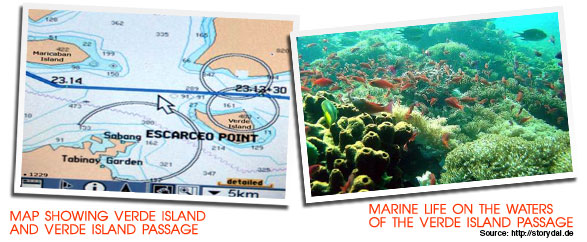
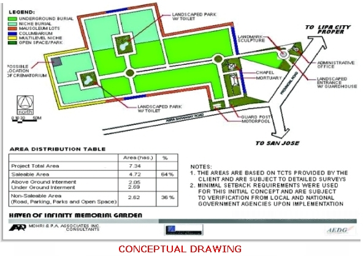

Abacore' principal real estate subsidiary is Omnicor Industrial Estate and Realty Center, Inc. (Omnicor). Through Omnicor, Abacore holds interests in various real properties located in the province of Batangas.
Punta Verde, Cloisters and Sanctuary. Abacore' main real estate project for 2009 and beyond is a residential, pilgrimage and recreation complex located in a 100-hectare plus property in Barangays Matuco and Pagkilatan, Batangas City, 30 minutes drive from Batangas City proper.
With a peak elevation of 180 meters above sea level, Matuco point slopes down toward white-sand beaches facing Verde Island Passage, a very special strip of sea that is home to spectacular reef formations of more than 300 species of coral and underwater rock canyons, hosting more than 60 percent of the world's known shorefish species. .
On a quiet spot of Matuco Point, a pilgrimage site will be built featuring a 100-meter high statue of Mary Mother of the Poor, as well as a retreat house, meditation gardens, condotels and other facilities.

Abacore is in joint venture with Solar Resources, Inc. for the 82-hectare Punta Verde project, which is masterplanned by Palafox Associates. Abacore is developing the rest of the property area into the Cloisters and Sanctuary projects, with condotels and recreation facilities adjacent to the Montemaria shrine.
Haven of Infinity Memorial Garden. The Haven of Infinity Memorial Garden, straddling Lipa City and the town of San Jose,Batangas, will be built on prime property covering an area of approximately 7.8 hectares, directly accessible through the national highway. Abacore plans to construct a chapel, crematorium, mortuary and columbarium amid spacious parks and gardens. This project is expected to attract buyers from Lipa City, San Jose and other nearby towns in Batangas, especially in view of the rising demand for decent memorial parks. Abacore has secured the approval of local governments and is in the process of completing environmental requirements.

Other real properties. Abacore, though Abacus Global Technovisions, Inc., in which Abacore is a 9.64% stockholder, holds interests in two hotels in Batangas City, namely, the Alpa Hotel and the Batangan Plaza. Alpa Hotel is a budget 50-room hotel located almost right next to the Provincial Capitol. It has a fine dining restaurant, conference rooms and function rooms, and a swimming pool and poolside lounge. Batangan Plaza, just 5 minutes drive from Alpa Hotel, has 36 spacious rooms, a dining hall and a large conference/ reception room that can accommodate up to 750 persons. Alpa-Batangan has, for many years, been a favorite venue for civic conventions, wedding receptions and graduation balls.